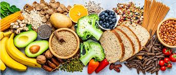

Início
A alimentação sustentável é muito mais do que uma simples escolha de dieta; representa um compromisso consciente com o futuro do planeta e com o bem-estar humano a longo prazo. Esse conceito abrange não apenas o que comemos, mas como produzimos, distribuímos e consumimos alimentos. Em um mundo onde a população cresce exponencialmente e os recursos naturais são limitados, a sustentabilidade na alimentação torna-se crucial. Isso significa adotar práticas agrícolas que respeitem o meio ambiente, como a agricultura orgânica, o uso eficiente da água e a preservação da biodiversidade. Além disso, envolve escolher alimentos que tenham menor impacto ambiental, como produtos locais e sazonais, que reduzem a pegada de carbono associada ao transporte e armazenamento. A diversificação da dieta também desempenha um papel fundamental na alimentação sustentável, promovendo uma maior variedade de alimentos e reduzindo a pressão sobre recursos específicos, como o solo e a água. Isso não apenas melhora a segurança alimentar, mas também aumenta a resiliência dos sistemas alimentares frente às mudanças climáticas e outras perturbações. Além dos aspectos ambientais, a alimentação sustentável considera também o impacto social e econômico da produção de alimentos. Isso inclui garantir condições de trabalho justas e seguras para os agricultores e trabalhadores rurais, bem como apoiar práticas comerciais que beneficiem comunidades locais e promovam a equidade. No nível individual, adotar uma alimentação sustentável pode ser alcançado através de escolhas conscientes: preferir alimentos frescos e minimamente processados, reduzir o desperdício alimentar, escolher produtos com certificações ambientais e optar por alternativas vegetais mais frequentemente. Em resumo, a alimentação sustentável é um modelo que busca equilibrar as necessidades nutricionais humanas com a capacidade do planeta de fornecer recursos. Ao abraçar essa abordagem, não só garantimos um futuro mais saudável para nós mesmos, mas também para as gerações futuras e para o meio ambiente como um todo.
Sobre
Promover a alimentação sustentável através de receitas nutritivas, que respeitam o meio ambiente e contribuem para a saúde dos consumidores.
Serviços
Receitas Sustentáveis e Nutritivas: Descrição: Uma vasta coleção de receitas criativas e balanceadas, desenvolvidas para maximizar o uso de ingredientes orgânicos e locais. Benefícios: Promove uma alimentação saudável enquanto reduz o impacto ambiental, inspirando os usuários a adotar práticas culinárias sustentáveis. Guia de Compras Sustentáveis: Descrição: Orientações detalhadas para ajudar os usuários a fazer escolhas conscientes ao comprar alimentos, destacando produtos sazonais, orgânicos e de fontes responsáveis. Benefícios: Facilita a transição para um estilo de vida mais sustentável, incentivando o apoio a agricultores locais e a redução da pegada de carbono. Artigos Educativos e Blog: Descrição: Publicações informativas sobre nutrição, segurança alimentar, práticas agrícolas sustentáveis e impacto ambiental da indústria alimentícia. Benefícios: Educa os usuários sobre os benefícios da alimentação sustentável, fornecendo informações atualizadas e baseadas em evidências para apoio à tomada de decisões informadas. Dicas de Cozinha Sustentável: Descrição: Sugestões práticas e estratégias para reduzir o desperdício de alimentos na cozinha, maximizar o aproveitamento de ingredientes e otimizar recursos. Benefícios: Ajuda os usuários a economizar dinheiro, minimizar o impacto ambiental e cultivar hábitos de consumo conscientes. Comunidade e Interação: Descrição: Fóruns de discussão, seções de comentários em receitas e artigos, e redes sociais para compartilhamento de experiências, dicas e ideias entre os membros da comunidade EcoGourmet. Benefícios: Cria um espaço inclusivo e colaborativo onde os usuários podem se conectar, aprender uns com os outros e se motivar mutuamente na jornada para uma vida mais sustentável. Consultoria e Eventos Especiais: Descrição: Serviços de consultoria personalizada para indivíduos e empresas interessadas em adotar práticas alimentares sustentáveis. Realização de eventos especiais, como workshops e webinars, sobre temas relacionados à alimentação sustentável. Benefícios: Oferece suporte direcionado para a implementação de mudanças sustentáveis e oportunidades de aprendizado prático e interativo.